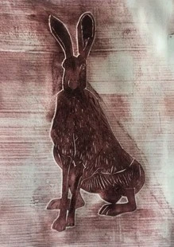

Helen Campbell

Mae Helen yn arlunydd cain ac yn wneuthurwr printiau.
Yn byw rhwng Bryniau’r Pennine ac Ynys Môn, gan gymryd ysbrydoliaeth o ardaloedd trawiadol o dirweddau gwahanol iawn.
Yn gweithio mewn gwahanol gyfryngau, gan fynegi’r hyn y mae’n ei weld trwy ei chelf.
Helen is a fine artist and print maker.
Living between the Pennine Hills and Anglesey, taking inspiration from stunning areas of very different landscapes.
Works in different mediums, expressing what she sees through her art.
07858 463410
www.thegalleryinthegarden.com
8 TAN Y GRAIG, TALWRN, PENTRAETH, LL75 8UL
O ganol Pentraeth cymerwch ffordd B5109 Talwrn. Ychydig cyn y bryn ar y dde fe welwch fynedfa i fythynnod.
Mae lle parcio yn yrardal ganolog a fy mwthyn yw’r un olaf yn yr ail res gyferbyn â’r ffermdy mawr.
Beaumaris, turn left up Church Street.
From centre of Pentraeth take the B5109 Talwrn road. Just before hill on your right you will see an entrance to some cottages.
There is parking in the central area and my cottage is the last one in the second row opposite the big farm house.